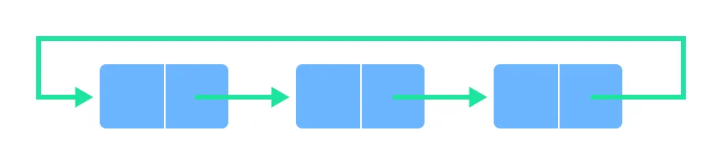

What are Queues
Queue is also an abstract data type or a linear data structure, just like stack data structure, in which the first element is inserted from one end called the REAR(also called tail), and the removal of existing element takes place from the other end called as FRONT(also called head).
Types of Queues
1:Simple Queue
.In a simple queue, insertion takes place at the rear and removal occurs at the front. It strictly follows the FIFO (First in First out) rule.

2:Circular Queue
In a circular queue, the last element points to the first element making a circular link..

The main advantage of a circular queue over a simple queue is better memory utilization. If the last position is full and the first position is empty, we can insert an element in the first position. This action is not possible in a simple queue.
3:Priority Queue
A priority queue is a special type of queue in which each element is associated with a priority and is served according to its priority. If elements with the same priority occur, they are served according to their order in the queue.Insertion occurs based on the arrival of the values and removal occurs based on priority.

Basic features of Queues.
- Like stack, queue is also an ordered list of elements of similar data types.
- Queue is a FIFO( First in First Out ) structure.
- Once a new element is inserted into the Queue, all the elements inserted before the new element in the queue must be removed, to remove the new element.